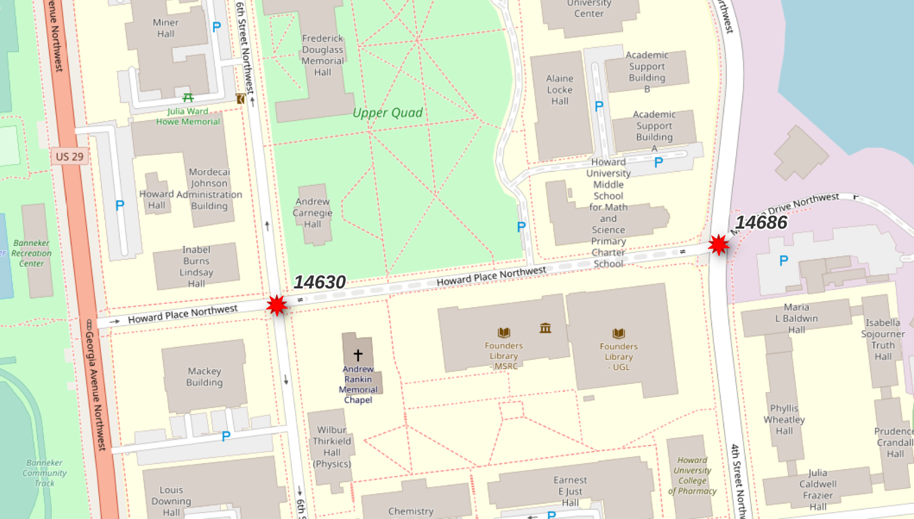
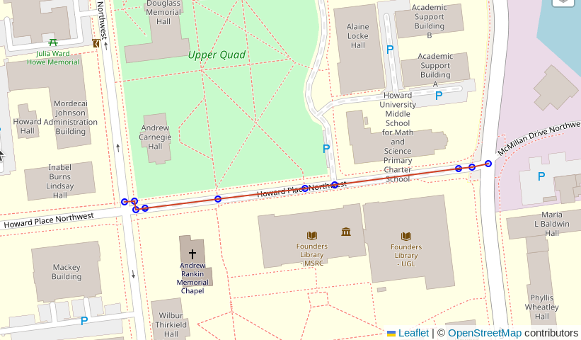
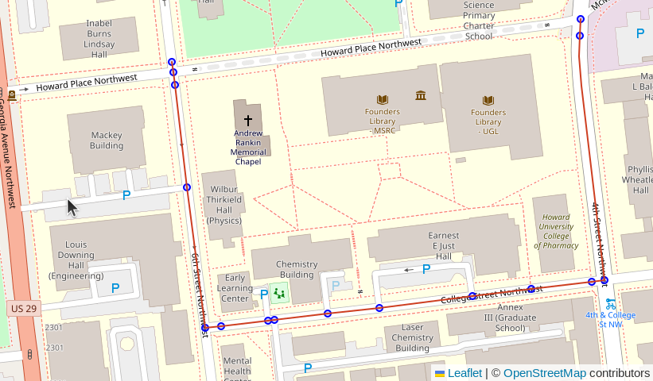
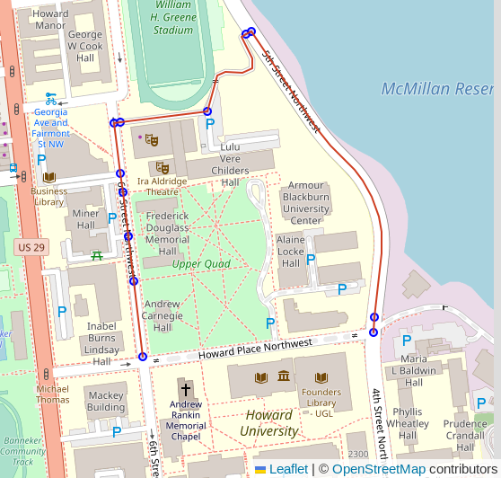

Routing with pgRouting 4
If you are using a pgRouting prior to 4.0 see Routing with pgRouting 3.
Create the pgRouting extension.
CREATE EXTENSION IF NOT EXISTS pgrouting;
Process the OpenStreetMap Roads
For routing on osm.road_line data use the osm.routing_prepare_roads_for_routing
procedure to prepare the edge and vertex data used for routing.
CALL osm.routing_prepare_roads_for_routing();
⚠️ The
osm.routing_prepare_roads_for_routingprocedure was added in PgOSM Flex 1.1.2 and is a significant deviation in routing preparation along with pgRouting 4.0. This procedure should be treated as a new feature with potential bugs lurking.
This procedure was created as part of the migration to pgRouting 4.0, see #408 for notes about this.
The procedure focuses on the most common use cases of routing with the osm.road_line
layer.
Timing for data preparation
This section outlines a few timing references to help gauge how long this might take for your region's data. Note these are generic timings using the built-in database in the PgOSM Flex Docker image, without any tuning from default configuration. Your tuning and your hardware will influence these timings.
- D.C.: 18 seconds
- Colorado: 11.5 minutes
The Colorado data set has 1.2M input roads resulting in 2.6M edges after splitting.
┌────────┬───────────────────┬─────────┐
│ s_name │ t_name │ rows │
╞════════╪═══════════════════╪═════════╡
│ osm │ routing_road_edge │ 2560998 │
│ osm │ road_line │ 1189678 │
└────────┴───────────────────┴─────────┘
Costs for Routing
Routing uses a concept of cost to determine the best route to traverse. Cost can be defined in a variety of methods. This section explores a few options.
Length Based Cost
The following query establishes a simple length based cost. In the case of defaults with PgOSM Flex, this results in costs in meters.
ALTER TABLE osm.routing_road_edge
ADD cost_length DOUBLE PRECISION NOT NULL
GENERATED ALWAYS AS (ST_Length(geom))
STORED
;
COMMENT ON COLUMN osm.routing_road_edge.cost_length IS 'Length based cost. Units are determined by SRID of geom data.';
The above will create a length calculation based on the SRID of the geom data,
by default this is SRID 3857.
⚠️ Warning: PgOSM Flex uses SRID 3857 by default. This generic projection is useful for global web mapping, however it does not provide accurate calculation for most Latitudes of the world. For accurate calculations, either run PgOSM Flex to load data in an accurate, local SRID, or use
ST_Transform(geom, your_srid).See Accuracy of Geometry data in PostGIS for more.
The following example creates a length based column using the geometry transformed to SRID 2773, ideal for the latitude covering the Denver, Colorado metro region.
ALTER TABLE osm.routing_road_edge
ADD cost_length DOUBLE PRECISION NOT NULL
GENERATED ALWAYS AS (ST_Length(ST_Transform(geom, 2773)))
STORED
;
Costs Including One Way Restrictions
Many real-world routing examples need to be aware of one-way travel restrictions.
The oneway column in PgOSM Flex's road tables uses
osm2pgsql's direction data type.
This direction data type resolves to int2 in Postgres. Valid values are:
0: Not one way1: One way, forward travel allowed-1: One way, reverse travel allowedNULL: It's complicated. See #172.
The osm.routing_road_edge table has the oneway column from the
osm.road_line table used as the source.
Calculate forward and reverse costs using the oneway column. This still provides
a length-based cost. The change is to also enforce direction restrictions within
the cost model.
-- Add forward cost column, enforcing oneway restrictions
ALTER TABLE osm.routing_road_edge
ADD cost_length_forward NUMERIC
GENERATED ALWAYS AS (
CASE WHEN oneway IN (0, 1) OR oneway IS NULL
THEN ST_Length(geom)
WHEN oneway = -1
THEN -1 * ST_Length(geom)
END
)
STORED
;
-- Add reverse cost column, enforcing oneway restrictions
ALTER TABLE osm.routing_road_edge
ADD cost_length_reverse NUMERIC
GENERATED ALWAYS AS (
CASE WHEN oneway IN (0, -1) OR oneway IS NULL
THEN ST_Length(geom)
WHEN oneway = 1
THEN -1 * ST_Length(geom)
END
)
STORED
;
COMMENT ON COLUMN osm.routing_road_edge.cost_length_forward IS 'Length based cost for forward travel when using directed travel graphs.';
COMMENT ON COLUMN osm.routing_road_edge.cost_length_reverse IS 'Length based cost for reverse travel when using directed travel graphs.';
Travel Time Costs
With lengths and one-way already calculated per edge, speed limits can be used to compute travel time costs.
Determine route start and end
The following query identifies the vertex IDs for a start and end point
to use for later queries. The query uses an input set of points
created from specific longitude/latitude values.
Use the start_id and end_id values from this query
in subsequent queries through the :start_id and :end_id variables
via DBeaver.
This query simulates a GUI allowing user to click on start/end points on a map, resulting in longitude and latitude values.
WITH s_point AS (
SELECT v.id AS start_id, v.geom
FROM osm.routing_road_vertex v
INNER JOIN (SELECT
ST_Transform(ST_SetSRID(ST_MakePoint(-77.0211, 38.92255), 4326), 3857)
AS geom
) p ON v.geom <-> p.geom < 20
ORDER BY v.geom <-> p.geom
LIMIT 1
), e_point AS (
SELECT v.id AS end_id, v.geom
FROM osm.routing_road_vertex v
INNER JOIN (SELECT
ST_Transform(ST_SetSRID(ST_MakePoint(-77.0183, 38.9227), 4326), 3857)
AS geom
) p ON v.geom <-> p.geom < 20
ORDER BY v.geom <-> p.geom
LIMIT 1
)
SELECT s_point.start_id, e_point.end_id
, s_point.geom AS geom_start
, e_point.geom AS geom_end
FROM s_point, e_point
;
┌──────────┬────────┐
│ start_id │ end_id │
╞══════════╪════════╡
│ 14630 │ 14686 │
└──────────┴────────┘
Warning: The vertex IDs returned by the above query will vary. The pgRouting functions that generate this data do not guarantee data will always be generated in precisely the same order, causing these IDs to be different.
The vertex IDs returned were 14630 and 14686. These points
span a particular segment of road (osm_id = 6062791) that is tagged
as highway=residential and access=private.
This segment is used to illustrate how the calculated access
control columns, route_motor, route_cycle and route_foot,
can influence route selection.
SELECT *
FROM routing.road_line
WHERE osm_id = 6062791
;

See
flex-config/helpers.luafunctions (e.g.routable_motor()) for logic behind access control columns.
Route!
Using pgr_dijkstra() and no additional filters will
use all roads from OpenStreetMap without regard to mode of travel
or access rules.
This query picks a route that traverses sidewalks and
a section of road with the
access=private tag from OpenStreetMap.
The key details to focus on in the following queries
is the string containing a SQL query passed into the pgr_dijkstra()
function. This first example is a simple query from the
osm.routing_road_edge table.
Note: These queries are intended to be ran using DBeaver. The
:start_idand:end_idvariables work within DBeaver, but not viapsqlor QGIS. Support in other GUIs is unknown at this time (PRs welcome!).
SELECT d.*, n.geom AS node_geom, e.geom AS edge_geom
FROM pgr_dijkstra(
'SELECT edge_id AS id, source, target, cost_length AS cost,
geom
FROM osm.routing_road_edge
',
:start_id, :end_id, directed := False
) d
INNER JOIN osm.routing_road_vertex n ON d.node = n.id
LEFT JOIN osm.routing_road_edge e ON d.edge = e.edge_id
;

Route motorized
The following query modifies the query passed in to pgr_dijkstra()
to join the osm.routing_road_edge table to the
routing.road_line table. This allows using attributes available
in the upstream table for additional routing logic.
The join clause includes a filter on the route_motor column.
From the comment on the osm.road_line.route_motor column:
"Best guess if the segment is route-able for motorized traffic. If access is no or private, set to false. WARNING: This does not indicate that this method of travel is safe OR allowed!"
Based on this comment, we can expect that adding AND route_motor
into the filter will ensure the road type is suitable for motorized
traffic, and it excludes routes marked private.
SELECT d.*, n.geom AS node_geom, e.geom AS edge_geom
FROM pgr_dijkstra(
'SELECT e.edge_id AS id, e.source, e.target, e.cost_length AS cost,
e.geom
FROM osm.routing_road_edge e
WHERE e.route_motor
',
:start_id, :end_id, directed := False
) d
INNER JOIN osm.routing_road_vertex n ON d.node = n.id
LEFT JOIN osm.routing_road_edge e ON d.edge = e.edge_id
;

Oneway-aware routing
The route shown in the previous example now respects the access control and limits to routes suitable for motorized traffic. It, however, did not respect the one-way access control. The very first segment (top-left corner of screenshot) went the wrong way on a one-way street. This behavior is a result of the simple length-based cost model.
This query uses the new reverse cost column, and changes
directed from False to True.
If you do not see the route shown in the screenshot below, try switching the
:start_id and :end_id values.
SELECT d.*, n.geom AS node_geom, e.geom AS edge_geom
FROM pgr_dijkstra(
'SELECT e.edge_id AS id, e.source, e.target
, e.cost_length_forward AS cost
, e.cost_length_reverse AS reverse_cost
, e.geom
FROM osm.routing_road_edge e
WHERE e.route_motor
',
:start_id, :end_id, directed := True
) d
INNER JOIN osm.routing_road_vertex n ON d.node = n.id
LEFT JOIN osm.routing_road_edge e ON d.edge = e.edge_id
;
